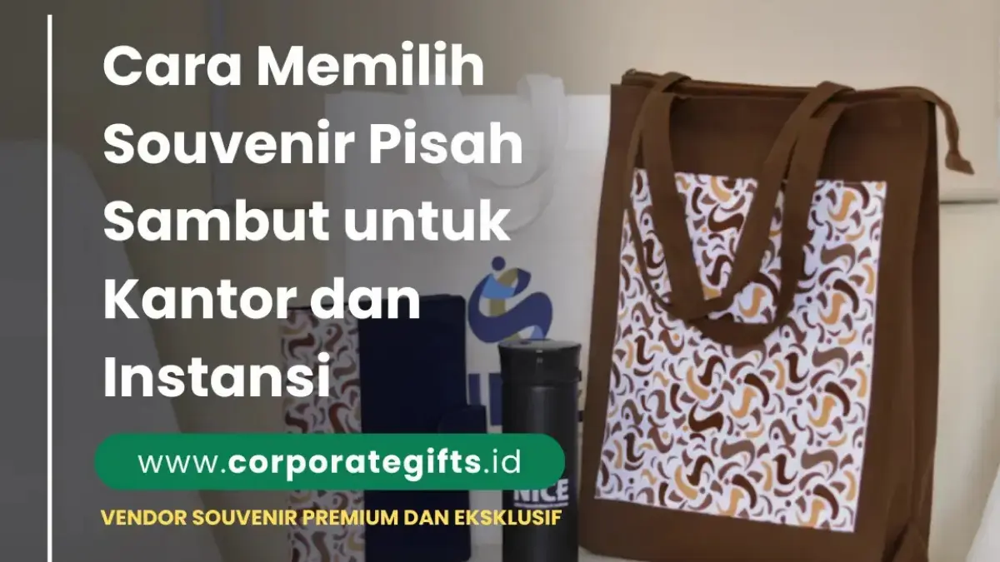

Makna dan Urgensi Souvenir Pisah Sambut Kantor
Corporate Gifts ID - Dalam dinamika organisasi dan dunia profesional yang bergerak cepat, momen pisah sambut merupakan tradisi fundamental yang merefleksikan rasa hormat, apresiasi, dan kehangatan kelembagaan. Baik untuk rekan kerja yang memasuki masa purnabakti (pensiun), berpindah cabang dinas, meraih promosi jabatan ke unit lain, maupun dalam menyambut pemimpin baru yang bergabung ke dalam tim, cinderamata perpisahan memiliki peran sentral sebagai wujud rekognisi atas perjalanan karier bersama.
Souvenir pisah sambut adalah hadiah simbolis yang dirancang untuk menyampaikan rasa terima kasih mendalam atas kontribusi masa lalu sekaligus menyuntikkan doa keberhasilan untuk langkah profesional berikutnya. Hadiah yang ideal tidak semata dinilai dari harga nominalnya, melainkan dari keseimbangan antara nilai guna fungsional, keanggunan estetika, serta relevansinya terhadap identitas korporat.
1. Pahami Tujuan dan Hierarki Penerima Souvenir
Langkah awal yang paling menentukan keberhasilan pengadaan adalah mengidentifikasi secara mendalam profil penerima dan latar belakang seremoninya. Konteks perpisahan seorang direktur utama tentu menuntut perlakuan protokoler yang berbeda dibandingkan acara pelepasan rekan sejawat dalam satu divisi proyek:
- Manajemen Puncak & Dewan Direksi: Menuntut cinderamata yang sarat kehormatan formal, bernilai prestisius, dan tahan lama. Rekomendasi utama mencakup plakat kristal optik dengan grafir laser 3D, pulpen metal premium berukir inisial, atau leather gift box eksklusif.
- Rekan Sejawat & Anggota Tim: Cinderamata dapat dirancang lebih luwes, fungsional, dan bernuansa personal. Pilihan seperti smart tumbler stainless custom grafir, agenda kulit harian, hingga perlengkapan meja kerja modern sangat relevan untuk menunjang aktivitas mereka selanjutnya.
- Karyawan Purnabakti (Pensiun): Membutuhkan kenang-kenangan yang memiliki nilai sentimental abadi, seperti plakat dedikasi masa bakti berpadu dengan jam meja kayu jati atau buku memoar khusus tim.
2. Pilih Jenis Souvenir Berdasarkan Kesan yang Ditinggalkan
Souvenir bukan sekadar objek fisik, melainkan wahana penyampai pesan emosional. Tentukan atmosfer apa yang ingin Anda ciptakan saat cinderamata diserahkan:
- Kesan Profesional & Elegan: Diciptakan melalui gift set bertema eksekutif, pulpen metal berbobot mantap, sertifikat kulit penghargaan, atau organizer meja berbalut synthetic leather premium.
- Kesan Hangat & Personal: Dibangun lewat mug custom berkualitas tinggi dengan pesan perpisahan jenaka namun tulus, notebook bertuliskan nama personal, atau kolase foto perjalanan kerja tim.
- Kesan Simbolis & Visioner: Disampaikan lewat plakat miniatur gedung instansi atau cinderamata bernuansa tanaman hias dalam pot keramik berlogo yang melambangkan pertumbuhan berkelanjutan.

Packaging gift box premium dan kartu ucapan personal untuk menyempurnakan seremoni pisah sambut instansi.
3. Utamakan Kualitas dan Desain yang Representatif
Kualitas material dan hasil cetak mencerminkan reputasi instansi di mata penerima. Memberikan produk dengan material rapuh atau sablon yang mudah luntur justru dapat menurunkan citra positif perusahaan. Oleh karena itu, prioritaskan material yang teruji ketahanannya, seperti stainless steel food-grade SUS 304 pada botol minum, cover agenda berbahan thermo-PU leather yang lembut, dan pelapisan krom yang solid pada instrumen pulpen.
Pendekatan desain minimalis modern kini menjadi standar emas cinderamata korporat. Penempatan logo instansi secara proporsional - baik menggunakan teknik blind deboss, laser engrave, maupun UV print monokrom - memberikan kesan mewah yang berkelas tanpa terlihat mencolok layaknya barang promosi massal.
4. Sesuaikan Souvenir dengan Anggaran Perusahaan (Matriks Harga)
Kendala anggaran tidak boleh menjadi penghalang untuk menghadirkan cinderamata yang mengesankan. Kunci utamanya adalah menerapkan prinsip tiered budgeting berdasarkan tingkatan struktural dan urgensi acara. Melalui kurasi souvenir custom VIP dan katalog souvenir kantor, Anda dapat menyelaraskan kebutuhan dengan alokasi biaya secara presisi.
Berikut matriks perbandingan paket souvenir pisah sambut kantor yang dapat disesuaikan dengan kebutuhan instansi Anda:
| Tingkatan Penerima | Kombinasi Rekomendasi Item | Tipe Kemasan | Estimasi Biaya per Unit |
|---|---|---|---|
| Tier 1: Pimpinan & Direksi | Plakat Kristal Grafir 3D + Pulpen Metal Eksekutif + Smart Tumbler LED + Buku Agenda Kulit | Hardbox Magnetik Bludru + Hotprint Emas | Rp250.000 - Rp650.000 |
| Tier 2: Manajer & Supervisor | Gift Set Notebook Hardcover Deboss + Tumbler Stainless SUS 304 + Pulpen Rollerball | Rigid Box Custom + Sleeve Branding | Rp120.000 - Rp220.000 |
| Tier 3: Rekan Tim & Staf | Vacuum Tumbler Grafir Nama + Pouch Canvas Custom + Memo Pad Sticky Note | Craft Box Eco-Friendly + Ribbon Pita | Rp65.000 - Rp110.000 |
5. Pertimbangkan Kemasan dan Etika Penyampaian Souvenir
Cinderamata terbaik sekalipun akan kehilangan separuh pesonanya apabila diserahkan secara tergesa-gesa tanpa kemasan yang layak. Desain kemasan adalah titik kontak visual pertama yang membangun antisipasi dan rasa dihargai pada benak penerima.
Gunakan gift box dengan proporsi yang pas, dilengkapi busa eva cut-out di bagian dalam agar setiap item tertata kokoh dan rapi. Selipkan pula kartu ucapan resmi berlogo instansi yang memuat kata-kata mutiara dari pimpinan atau seluruh rekan tim. Penyerahan cinderamata pada momen puncak acara - tepat setelah pidato perpisahan atau penayangan video kilas balik perjalanan dinas - akan memperkuat muatan emosional dan meninggalkan kenangan yang tak lekang oleh waktu.
6. Rekomendasi Jenis Souvenir Pisah Sambut Terbaik
Berdasarkan tren pengadaan merchandise kelembagaan terbaru, berikut lima opsi cinderamata yang paling banyak diminati karena memiliki perpaduan ideal antara elegansi dan utilitas harian:
- Executive Gift Box Set: Paket komplit berisikan tumbler vacuum flask, power bank fast-charging bersertifikasi aman, dan wireless presenter atau notebook agenda kulit. Sangat cocok untuk level manajerial dan kepala instansi.
- Plakat Kayu & Logam Kuningan: Memberikan sentuhan klasik yang berwibawa, sangat ideal bagi seremoni purnatugas kedinasan atau pejabat kementerian dan BUMN.
- Tumbler Stainless Personal Laser Name: Pilihan ramah lingkungan yang sangat fungsional untuk penggunaan harian di kantor baru maupun saat mobilitas perjalanan dinas.
- Organizer Meja Kerja Multifungsi: Tempat pena dan smartphone holder berbahan kayu atau kulit sintetis yang menjaga kerapian meja kerja penerima.
- Leather Bag & Laptop Sleeve: Pelindung perangkat digital premium beremboss logo instansi yang mendukung mobilitas kerja modern.
7. Selaraskan Souvenir dengan Nilai dan Budaya Perusahaan
Setiap institusi memiliki narasi nilai dan identitas budaya yang unik. Instansi sektor teknologi atau rintisan modern biasanya lebih menyukai souvenir bergaya futuristik, seperti perlengkapan smart office dan gadget produktivitas nirkabel. Sebaliknya, lembaga pemerintah, perbankan, dan institusi hukum sering kali mengutamakan formalitas tradisi melalui plakat gravir berornamen resmi atau gift set beludru.
Penyelarasan palet warna cinderamata dengan identitas visual korporat (corporate branding guideline) juga menjamin konsistensi citra lembaga yang profesional, rapi, dan membanggakan bagi siapa pun yang menerimanya.
Kesimpulan Praktis
Merancang souvenir pisah sambut yang sukses bagi lingkungan kantor dan instansi adalah seni menyeimbangkan rasa hormat emosional dengan kepraktisan guna harian. Dengan mengidentifikasi hierarki penerima, memilih material berdaya tahan tinggi, serta menyajikannya dalam kemasan eksklusif, perpisahan tidak lagi sekadar seremoni formal biasa, melainkan tonggak pengingat atas kerja sama yang bermakna.
Konsultasikan kebutuhan cinderamata pisah sambut instansi Anda bersama tim ahli kami melalui formulir minta penawaran harga resmi (RFQ) atau jelajahi koleksi terlengkap pada e-katalog corporate gifts kami.
Pertanyaan Seputar Souvenir Pisah Sambut (FAQ)

Ditulis oleh: Arinda Zakia
Senior Corporate Gifting SpecialistSpesialis kurasi cinderamata perusahaan, gift set eksekutif VIP, dan pengadaan merchandise kantor dengan pengalaman lebih dari 7 tahun dalam industri corporate gifting di Indonesia.
Lihat Profil Lengkap & Panduan Lainnya